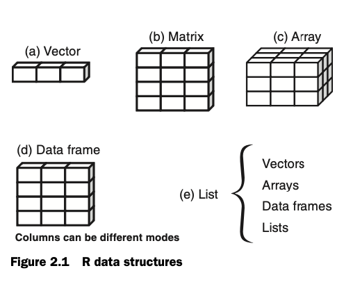

90년대에 통계 분석을 위해 개발된 R 언어와 대비하여, 좀 더 직관적이고 효율적인 데이터 분석을 위해 새로운 문법이 R내의 패키지 형태로 구현되었는데 이 새로운 생태계 안의 패키지들의 모임이 Tidyverse라는 이름하에 발전하고 있음: Tidyverse
이 패키지들은 design philosophy, grammar, data structures를 공유하며 유기적으로 작동됨.
기존 R의 문법과는 상당한 차이가 있어 단점도 지적되고 있고, 소위 base-R을 고수하는 사람들과 tidyverse를 기본으로 사용하는 사람들이 나뉘어 있다고 알려져 있음.
아마도 빠르게 발전하고 있는 tidyverse/tidymodel 생태계의 언어들이 기본으로 자리잡지 않을까 함.
본 강의에서는 주로 tidyverse의 언어로만 분석하고자 함.
R의 데이터 구조와 변수 타입
주로 vector (벡터)와 data frame (데이터프레임)을 다룸

Source: R in Action by Rob Kabacoff
Data frame의 예
각 column이 하나의 variable (변수)를 구성하고, 한가지 타입의 데이터로 이루어짐
각 Row가 하나의 observation (관측치)을 구성함.
이러한 형태를 갖춘 데이터를 tidy라고도 부르며, 이를 벗어난 형태의 경우 가공이 필요함.
ex. “m23”: male이고 23세임을 나타내는 표기도 있음
wage educ race sex hispanic south married exper union age sector
1 9.0 10 W M NH NS Married 27 Not 43 const
2 5.5 12 W M NH NS Married 20 Not 38 sales
3 3.8 12 W F NH NS Single 4 Not 22 sales
4 10.5 12 W F NH NS Married 29 Not 47 clerical
5 15.0 12 W M NH NS Married 40 Union 58 const
6 9.0 16 W F NH NS Married 27 Not 49 clerical
cps <-as_tibble(cps) # tibble vs. data.framehead(cps) |>print()
# A tibble: 6 × 11
wage educ race sex hispanic south married exper union age sector
<dbl> <int> <fct> <fct> <fct> <fct> <fct> <int> <fct> <int> <fct>
1 9 10 W M NH NS Married 27 Not 43 const
2 5.5 12 W M NH NS Married 20 Not 38 sales
3 3.8 12 W F NH NS Single 4 Not 22 sales
4 10.5 12 W F NH NS Married 29 Not 47 clerical
5 15 12 W M NH NS Married 40 Union 58 const
6 9 16 W F NH NS Married 27 Not 49 clerical
# 원소의 추출patientdata[1:2] # 변수의 열을 지정## patientID age## 1 1 25## 2 2 34## 3 3 28## 4 4 52patientdata[c("diabetes", "status")] # 열 이름을 지정## diabetes status## 1 Type1 Poor## 2 Type2 Improved## 3 Type1 Excellent## 4 Type1 Poorpatientdata[c(1, 3), c("age", "status")] # 행과 열을 모두 지정## age status## 1 25 Poor## 3 28 Excellentpatientdata[c(1, 3), c(2, 4)]## age status## 1 25 Poor## 3 28 Excellentpatientdata[, 1:2] # patientdata[1:2]과 동일, 빈칸은 모든 행을 의미## patientID age## 1 1 25## 2 2 34## 3 3 28## 4 4 52patientdata[1:2, ] # 빈칸은 모든 열을 의미## patientID age diabetes status## 1 1 25 Type1 Poor## 2 2 34 Type2 Improvedpatientdata[-1] # 열 제외## age diabetes status## 1 25 Type1 Poor## 2 34 Type2 Improved## 3 28 Type1 Excellent## 4 52 Type1 Poorpatientdata[-c(1, 3)] # 열 제외## age status## 1 25 Poor## 2 34 Improved## 3 28 Excellent## 4 52 Poorpatientdata[-c(1:2), 2:4] # 행 제외 & 열 선택## age diabetes status## 3 28 Type1 Excellent## 4 52 Type1 Poor# 변수/열의 성분을 벡터로 추출: $ 또는 [[ ]]을 이용patientdata$age # $를 이용## [1] 25 34 28 52class(patientdata$age) # numeric vector임을 확인## [1] "numeric"patientdata[["age"]] # patientdata$age과 동일, [[ ]] doule bracket을 이용해 벡터로 추출## [1] 25 34 28 52patientdata[[2]] # 열의 위치를 이용해도 동일한 추출## [1] 25 34 28 52patientdata["age"] # [ ] single bracket은 열을 선택하는 것으로 데이터 프레임으로 추출## age## 1 25## 2 34## 3 28## 4 52patientdata[2] # 2번째 열을 추출; patientdata["age"]과 동일## age## 1 25## 2 34## 3 28## 4 52
데이터의 추가 및 대체
# 데이터 추가patientdata$gender <-c(1, 1, 2, 2) patientdata## patientID age diabetes status gender## 1 1 25 Type1 Poor 1## 2 2 34 Type2 Improved 1## 3 3 28 Type1 Excellent 2## 4 4 52 Type1 Poor 2# 데이터 대체patientdata[c(1,3), "age"] # 혼동: 원칙적으로 데이터프레임으로 추출되어야하나 벡터로 추출됨## [1] 25 28patientdata[c(1,3), "age"] <-c(88, 99)patientdata## patientID age diabetes status gender## 1 1 88 Type1 Poor 1## 2 2 34 Type2 Improved 1## 3 3 99 Type1 Excellent 2## 4 4 52 Type1 Poor 2# 참고row.names(patientdata) # 데이터 프레임의 행 이름## [1] "1" "2" "3" "4"row.names(patientdata) <-c("a", "b", "c", "d")patientdata## patientID age diabetes status gender## a 1 88 Type1 Poor 1## b 2 34 Type2 Improved 1## c 3 99 Type1 Excellent 2## d 4 52 Type1 Poor 2
Tibble
기존 data.frame의 단점을 보안한 tidyverse에서 기본이 되는 데이터 형식
Data frame vs. tibble
Printing의 차이
cps <- mosaicData::CPS85 # data.framecps# wage educ race sex hispanic south married exper union age sector# 1 9.0 10 W M NH NS Married 27 Not 43 const# 2 5.5 12 W M NH NS Married 20 Not 38 sales# 3 3.8 12 W F NH NS Single 4 Not 22 sales# 4 10.5 12 W F NH NS Married 29 Not 47 clerical# 5 15.0 12 W M NH NS Married 40 Union 58 const# 6 9.0 16 W F NH NS Married 27 Not 49 clerical...cps_tibble <-as_tibble(cps)cps_tibble# # A tibble: 534 × 11# wage educ race sex hispanic south married exper union age sector # <dbl> <int> <fct> <fct> <fct> <fct> <fct> <int> <fct> <int> <fct> # 1 9 10 W M NH NS Married 27 Not 43 const # 2 5.5 12 W M NH NS Married 20 Not 38 sales # 3 3.8 12 W F NH NS Single 4 Not 22 sales # 4 10.5 12 W F NH NS Married 29 Not 47 clerical# 5 15 12 W M NH NS Married 40 Union 58 const # 6 9 16 W F NH NS Married 27 Not 49 clerical# # … with 528 more rows